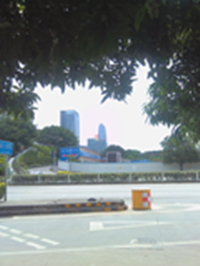

大四，写在走之前的话 [生活] 08月 23日
开头该从哪里说起呢，从出工作室那天说起吧。交完项目以及各类文档，终于是结束了一年的工作室。忘记是什么理由了，关工作室的那天下午在那里呆了很久，依稀还记得TJ同学闲着把工作室的前几排电脑系统都装了个遍...下一届的学弟学妹们不知道他们有一个爱装系统的TJ学姐，呵呵。晚上聚餐，不胜酒力啊，个人确实是一瓶啤酒倒的货...不过之后倒是蛮清醒的比我们班的那些男生。也就是从那天开始，我告诉自己工作室没了，大三没了，我大四了，不能逃避了。
之后的事情，至今想起来却是有种莫名的挫败感
在室友的告知下以及其他的相关因素，和才叔去了趟深圳。关于这座城市，我记得发了条说说，“每天匆匆的走过这些繁华，有的时候感觉自己不属于这里却还是想要融入这里，一个没见过世面的穷小子唉，如果我不属于这里，那我又属于哪里？”最终我选择了回来。
七月19号回到家里，在外的日子里明白了生活不容易。
觉得自己学得不够好，不够自信，希望回来好好地充电下。很遗憾，到今天，我还是没有成为技术帝。
在家的日子，做的最为完整的就是建立起了这个blog，虽然看起来很简单的样子，确实花费了我不少的功夫。
专注的做一件事情，做好这件事情就够了。前后兼修，一直是我的目标。考研也好，实习也好，你有你的梦想，我有我的欲望
生活很现实，现实的有时候你不想面对，但是却不能逃避
在南山区隔着不远处看见的腾讯大楼。华为，中兴，TCL，联想都在那...

回来的时候我告诉自己我还会回去的。
明天回学校，Stay foolish ，Stay hunger。总得有点结果，让人看得见的结果，不然就只是说说而已。
Last:You make millions of decisions that mean nothing and then one day your order takes out and it changes your life
comments powered by Disqus